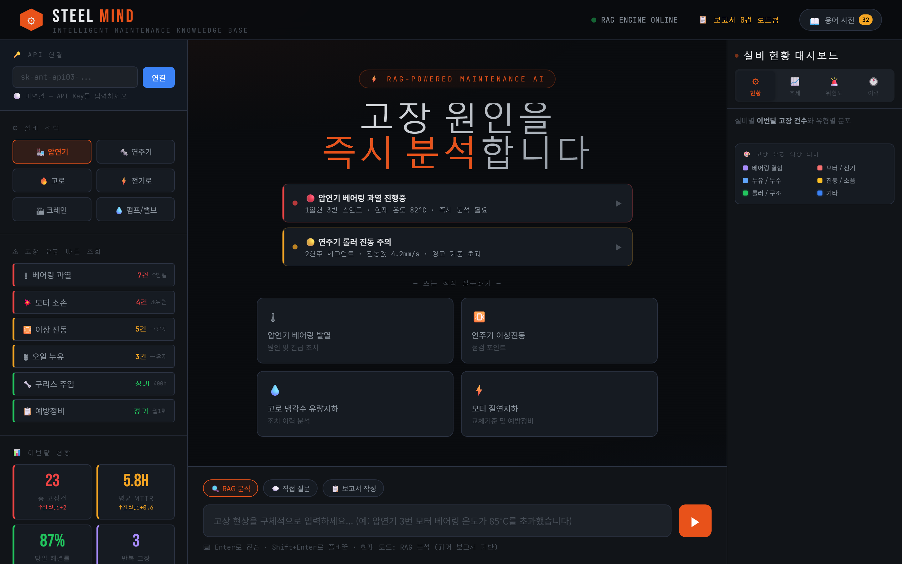

같은 Claude Code로, 이번에는 업무도구를 만듭니다.

M1
나만의 웹페이지

M2
주간 실적 통합표

M3
회의록 PDF

M4
PDF 분석 대시보드
지금 여기

M5
아이디어 기획서 한 장
다음과 같은 멋진 작품도 만들 수 있습니다.

팀원 평가 대시보드
흩어진 기록 → 피드백 초안

실시간 일정 관리
메일·메신저를 한 줄 요약으로

지시사항 이행관리
회의록에서 할 일과 기한을

신시장 인텔리전스
흩어진 조사 자료를 한 화면에

설비고장 도제 시스템
30년 노하우를 물어보는 화면으로
현대자동차 전자편의제어시험1팀 — 흩어진 기록을 모아 근거가 붙은 피드백 초안까지
① 흩어진 기록을 모아 자가 평가와 대조

② 근거를 달아 피드백 초안까지 자동 생성
현대모비스 조향시스템설계2팀 — 메일 · 메신저 · 회의 초청이 하루 종일 섞여 들어온다
① 긴급 · 일반 · 참고로 자동 분류, 일정 충돌은 미리 경고

② 답변 초안까지 준비 — 보낼지는 본인이 결정
현대자동차 미래전략운영팀 — 회의록은 쌓이는데 누가 언제까지 하는지는 흩어진다
① 회의 녹음을 받아써서 회의록 초안 → 지시사항 추출

② 담당 · 기한 · 이행 상태가 표로 남고, 기한 전에 자동 안내
현대자동차 미래혁신2팀 — 신시장 조사는 흩어진 자료를 사람이 읽고 정리해야 했다
궁금한 것을 한 줄로 적으면 — 찾는 일은 웹 검색에, 정리는 AI에
- 안내받은 페이지에서 개인 API 키 발급 화면으로 들어갑니다
- OTP 인증 화면이 뜨면 인증 앱을 설치하고 인증코드를 넣습니다사내 노트북 보안 정책 — 가이드 페이지를 함께 봅니다
- 발급된 키를 메모장에 복사해 둡니다
키는 아이디 · 비밀번호와 같습니다. 화면 공유 · 메신저 · 게시판에 올리지 않습니다.

OTP 인증 화면
- HTML 파일 하나로 만든 경우메일 · 메신저로 전달. 또는 Confluence 빈 페이지에서 //HMG HTML PRO 를 입력하고 소스 전체를 붙여넣기
- 압축 파일(zip)로 만든 경우메일 · 메신저로 전달. exe 첨부는 대부분 차단되지만 zip은 통과합니다. 용량이 크면 공유 드라이브로
- DB가 들어간 웹 App인 경우팀원 데이터를 저장하는 운영 수준이면 표준 H Cloud 환경에 배포해야 합니다

① Confluence 매크로